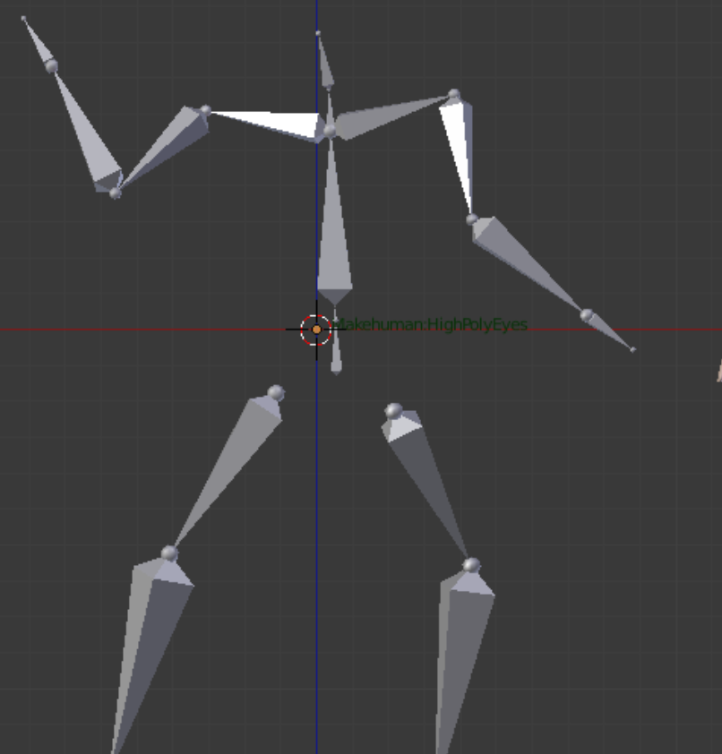

Task 3 - armarature
Development
I want to apologise as getting screenshots of my armarature at this time in not possible as all the
computers are being used and I forgot to save them to my private repositry. I did end up taking one
picture whichg could be used (this isnt the one i used in my design rather one that is similar to it I
foumnd online as public domain). During the develepment of my armarature and animation I had to restart
multiple times even though most of the time I couldnt figure out what went wrong. The first time my leg
started spinning in random directions whenever moved. Then my second attempt the feet wouldnt stop at
the floor despite having the correct targets. It was all really strange where I just couldnt get it
right despite following every instruction. In my 4th attempt for some reasons it decided to work despite
following the same instructions.
